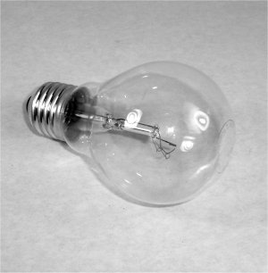
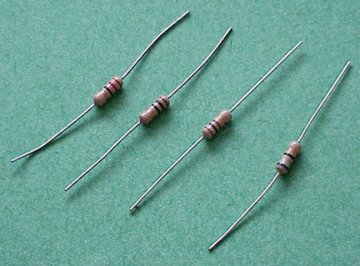
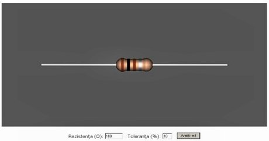
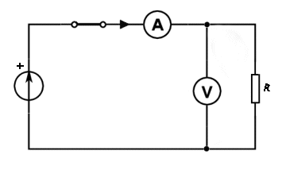
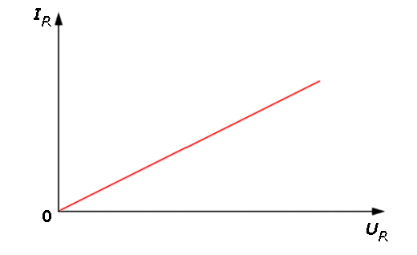
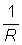

Producerea şi utilizarea curentului continuu |
Legile circuitelor electrice |
Întotdeauna suntem interesaţi să aflăm în care condiţii există relaţii simple între parametrii care descriu stări şi
procese fizice.
 Activitatea experimentală 2-1
Activitatea experimentală 2-1
Măsoară rezistenţa electrică a unui filament metalic a cărui temperatură nu se modifică. Lucrează în echipă.
Reluaţi experimentul precedent. De data aceasta, folosiţi în locul becului de lanternă un bec obişnuit, pentru
iluminat - din cele care se alimentează la 220 V (figura 2−1).
|  |
Figura 2−1. Bec utilizat pentru iluminat.
|
Pasul 1. Aplicaţi becului, pe rând, aceleaşi tensiuni pe care le−aţi aplicat în experimentul
precedent. Măsuraţi de fiecare dată tensiunea aplicată şi intensitatea curentului care se stabileşte prin filament.
Pasul 2. Completaţi un tabel după modelul celui de la experimentul precedent.
Pasul 3. Reprezentaţi grafic dependenţa intensităţii curentului electric care se stabileşte prin
filamentul becului de tensiunea aplicată acestuia.
Tot timpul experimentului, temperatura filamentului rămâne practic cea ambiantă. Tensiunile aplicate sunt mult prea mici
pentru a încălzi apreciabil filamentul.
Perechile de valori intensitate−tensiune se aranjează, practic, în linie dreaptă: intensitatea curentului este
direct proporţională cu tensiunea aplicată! Rezistenţa electrică a filamentului becului este practic constantă, oricare ar
fi tensiunea aplicată (în intervalul 1...5 V).
Utilizând straturi subţiri de carbon sau metal, se construiesc dispozitive − numite rezistori
(figura 2−2) − a căror rezistenţă electrică rămâne practic constantă pentru o plajă largă de tensiuni
aplicate, cu condiţia ca temperatura acestora să nu se modifice apreciabil.
|  |
Figura 2−2. Rezistori.
|
Rezistenţa electrică a rezistorilor este marcată pe aceştia, fie în clar, fie sub forma unor inele colorate, utilizând un
cod al culorilor (figura 2−2a).

Figura 2-2a. Rezistor având marcată în codul culorilor rezistenţa 4700 Ω şi
toleranţa ±5%.
Este dificilă fabricarea rezistorilor având oricare valoare a rezistenţei şi, totodată exactă. De aceea au fost stabilite serii
de valori standardizate, în funcţie de toleranţa cu care sunt satisfăcute aceste valori ale rezistenţei (tabelul 2−1).
Tabelul 1-1. Cele mai utilizate serii de valori standardizate ale rezistenţelor. Sunt prezentate două
cifre semnificative, care se înmulţesc cu o putere a lui 10 (multiplicator) pentru a forma valoarea dorită.
Seria
E6
(20%) |
Seria
E12
(10%) |
Seria
E24
(5%) |
| 10 | 10 | 10 |
| | | 11 |
| | 12 | 12 |
| | | 13 |
| 15 | 15 | 15 |
| | | 16 |
| | 18 | 18 |
| | | 20 |
| 22 | 22 | 22 |
| | | 24 |
| | 27 | 27 |
| | | 30 |
| 33 | 33 | 33 |
| | | 36 |
| | 39 | 39 |
| | | 43 |
| 47 | 47 | 47 |
| | | 51 |
| | 56 | 56 |
| | | 62 |
| 68 | 68 | 68 |
| | | 75 |
| | 82 | 82 |
| | | 91 |
 Provocarea 2-1
Provocarea 2-1
"Sparge" codul culorilor folosind simularea interactivă prezentată în figura 2−2b! Formulează concis cum se face
decodificarea benzilor colorate.

Figura 2-2b. Sparge codul culorilor!
Un rezistor se reprezintă în schemele electrice ca un dreptunghi (figura 2−3).
|
Figura 2−3. Reprezentarea simbolică a unui rezistor.
|
Activitatea experimentală 2-2
Măsoară rezistenţa electrică a unui rezistor marcat ca având rezistenţa 100 Ω. Lucrează în echipă.
Reluaţi experimentul precedent, folosind schema din figura 2−4.
|  |
Figura 2−4. Schema electrică pentru măsurarea rezistenţei electrice a unui rezistor.
|
Într−un experiment similar, reprezentarea grafică a valorilor măsurate este practic o linie dreaptă (figura 2−5).

Figura 2-5. Dependenţa intensităţii curentului printr−un rezistor de tensiunea aplicată acestuia.
Intensitatea curentului prin rezistor este direct proporţională cu tensiunea aplicată acestuia. Această dependenţă simplă
a fost descoperită pentru prima dată de către germanul Georg Simon Ohm, în 1825.
 Legea lui Ohm: Pentru rezistori, intensitatea curentului
electric care−i străbate este direct proporţională cu tensiunea aplicată acestora:
Legea lui Ohm: Pentru rezistori, intensitatea curentului
electric care−i străbate este direct proporţională cu tensiunea aplicată acestora:
Pentru tensiuni în gama 1...5 V, filamentul becului de lanternă nu respectă legea lui Ohm (factorul
 nu este constant), în timp ce becul pentru iluminat şi rezistorul o respectă.
Numim conductori ohmici conductorii care respectă legea lui Ohm.
Cele mai multe multimetre au şi funcţia de măsurare a rezistenţei electrice.
Activitatea experimentală 2-3
Măsoară rezistenţa electrică a unor rezistori, utilizând un multimetru setat pentru măsurarea rezistenţei electrice.
Compară valorile măsurate cu cele înscrise pe aceştia.